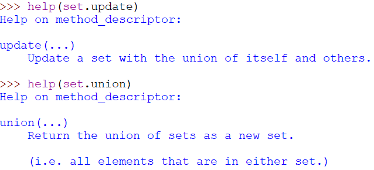

סליחה על הבורות, אבל מה ההבדל בין set.update ובין set.union?

מתודת ה-update משנה את הסט עליה היא מופעלת ומעדכנת אותו, ואילו מתודת ה-union יוצרת סט חדש.
לייק 1
הבנתי.
תודה רבה!!!
לדעתי מה שחשוב פה זה פחות התשובה אלא הגישה – שווה פשוט ללכת לדוקומנטציה ולבדוק (או להשתמש בפקודה help).
בהמשך לשאלה למעלה,
אני לא בטוחה שהבנתי את האמירה -
במקרה שאנחנו יכולים לשנות קבוצה קיימת ולנצל את היותה של קבוצה mutable, נעדיף לבחור בדרך הפעולה הזו כדי לייעל את התוכנית שלנו.
ואת הדוגמה שניתנה על update לעומת |.
בעיניי זה עניין של האם אני רוצה ליצור משתנה חדש או לעשות מניפולציה על המשתנה הקיים. יש עוד משהו שאני מפספסת או שזו היתה הכוונה?
אם יש לנו למשל סט (או רשימה, או מילון וכו’) שמכיל מיליון איברים ואנו רוצים ליצור סט שמכיל מיליון ואחד איברים ובכללם כל המיליון של הסט לפני, נעדיף לצרף איבר לסט הקיים, ולא ליצור סט חדש עם מיליון ואחד איברים. זה חוסך גם מקום - כך יש לנו סט יחיד של מיליון (ואחד) איברים ולא שניים של מיליון, וגם זמן - יותר מהיר לצרף איבר יחיד מאשר להעתיק מיליון איברים למקום אחר בזיכרון.
כמובן יש גם את השיקול אם נרצה לא לפגוע בסט הקיים אלא לשמור אותו כמו שהוא לשימוש אחר, אבל אנחנו מתייחסים פה למצב שבו זה לא משנה לנו
3 לייקים
הסבר מצויין, ממש עזר לי להבין! תודה 
לייק 1